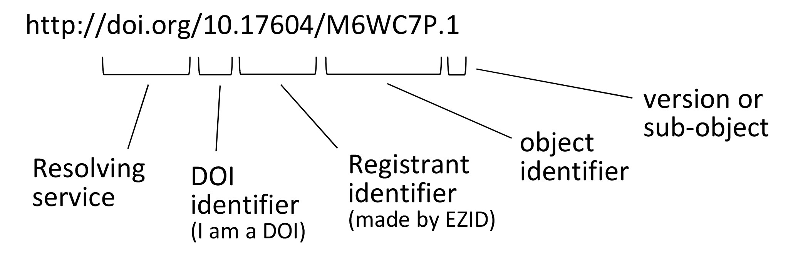
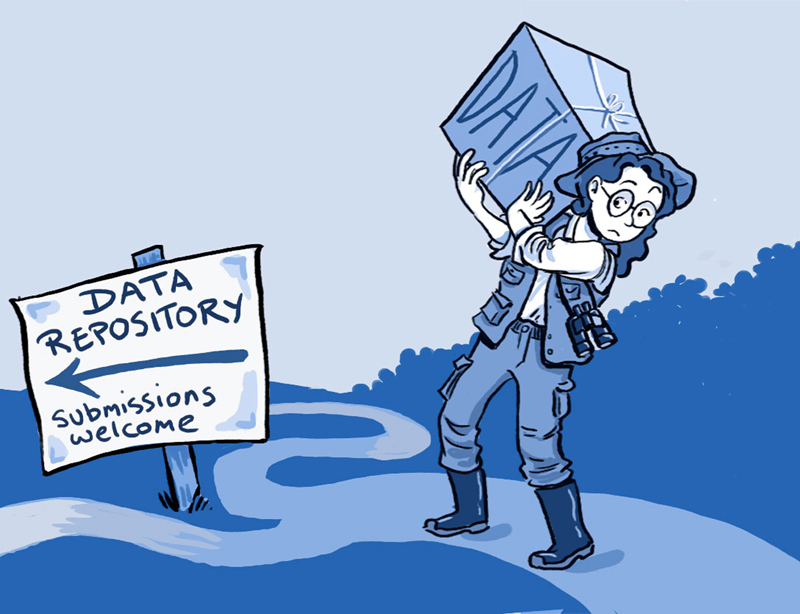

Digital Scholarship at the UM Libraries
- Digital Humanities
- Data Services
- GIS Services
- Data Management
Digital Scholarship at the UM Libraries
- Research Design
- Data Analysis and Statsitics
- Repositories: Aquiring and Publishing Data
- Data Visualization

|
|
- Geospatial Data Aquisition
- GIS Software Licensing
- Geospatial Data Analysis
- Cartography and Map Design
 |
 |
|
|

DOIs and ORCIDs


Work together to connect research to researcher
- Digital Object Identifiers (DOIs)
- Permanent identifiers (links) to online resources
- Provided by resolving service (https://doi.org/)
- All repositories provide these for your data
- UM is a member of DataCite who provides our DOIs
- ORCID
- https://orcid.org/
- like a Digital Object Identifier (DOI) for people
- the authoritative ID for researchers

Work together to connect research to researcher
Data Repositories

http://journals.plos.org/plosbiology/article?id=10.1371/journal.pbio.1001779. Image Credit: Ainsley Seago.
http://journals.plos.org/plosbiology/article?id=10.1371/journal.pbio.1001779. Image Credit: Ainsley Seago.
“Sharing data from one laboratory to another—or even within a laboratory—takes time and effort, but there are also psychological, cultural and technological barriers to doing so.”
Roche DG, Lanfear R, Binning SA, Haff TM, Schwanz LE, Cain KE, et al. (2014) Troubleshooting Public Data Archiving: Suggestions to Increase Participation. PLoS Biol 12(1): e1001779. https://doi.org/10.1371/journal.pbio.1001779